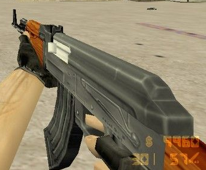
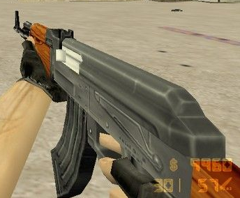

Здраствуйте, дорогие митингующие против школ!
Сегодня Вы увидите несколько видов оружий и их необычную историю,
а также, как они изображены в таких играх, как: Battlefield, PUBG, CS:GO и легендарной Cs 1.6(но это не точно).
Давайте начнём!
AK-47

Давайте начнём с легенды легенд - AK-47! Данный автомат был создан Михаилом Тимофеевичем Калашниковым в 1947 году, но был принят на вооружение только в 1949. Есть боевое и гражданское семейство автомата Калашникова. Некоторые из них: AKM и AK-74 с их модификациями, ручной пулемёт Калашникова(обычный калаш только с двуногой на конце дула и удобнее оригинала), карабины и гладкоствольные ружья "Сайга", и т.д.
Итак, история автомата Калашникова(в дальнейшем AK-47).
Отправной точкой работ по созданию автомата для советских вооружённых сил стало прошедшее 15 июля 1943 года совещание Технического совета при Наркомате обороны СССР, на котором по итогам изучения трофейного немецкого автомата MKb.42(H) под первый в мире массовый промежуточный патрон 7,92 mm калибра 7,92×33 мм, была отмечена большая важность нового направления в оружейной мысли и поставлен вопрос о необходимости срочной разработки своего «уменьшенного» патрона, аналогичного немецкому, а также оружия под него.
Первые образцы нового патрона были созданы ОКБ-44 уже через один месяц после совещания, а его опытно-промышленное производство началось в марте 1944 года. В ноябре 1943 года чертежи и спецификации на новый 7,62-мм промежуточный патрон конструкции Н. М. Елизарова и Б. В. Сёмина были разосланы по всем организациям, участвовавшим в разработке нового комплекса оружия. На этом этапе он имел калибр 7,62×41 мм, но впоследствии был переработан, т.е. калибр был изменён на 7,62×39 мм.
В Battlefield и CS:GO AK-47 ничем не отличается от оригинала, но в PUBG-е AK-47 заменён на АКМ (Avtomat Kalashnikova Modernizirovanny, т.е. модернизированный автомат Калашникова) и вот как он выглядит:

А в Cs 1.6 AK-47 называется CV-47. Также AK-47... ой извиняюсь CV-47 был изменён в целях не допустить бана на Cs 1.6 из-за авторского права.
В чём заключаются изменения?? А в том, что передёргивалка под названием затвор находится слева, а не справа, как показано в оригинале.

Для справки: оригинальная версия AK-47 показана справа. Там чётко и ясно видно, что затвор находится справа, раз оригинал был показан справа.
Давайте начнём с легенды легенд - AK-47! Данный автомат был создан Михаилом Тимофеевичем Калашниковым в 1947 году, но был принят на вооружение только в 1949. Есть боевое и гражданское семейство автомата Калашникова. Некоторые из них: AKM и AK-74 с их модификациями, ручной пулемёт Калашникова(обычный калаш только с двуногой на конце дула и удобнее оригинала), карабины и гладкоствольные ружья "Сайга", и т.д.
Итак, история автомата Калашникова(в дальнейшем AK-47).
Отправной точкой работ по созданию автомата для советских вооружённых сил стало прошедшее 15 июля 1943 года совещание Технического совета при Наркомате обороны СССР, на котором по итогам изучения трофейного немецкого автомата MKb.42(H) под первый в мире массовый промежуточный патрон 7,92 mm калибра 7,92×33 мм, была отмечена большая важность нового направления в оружейной мысли и поставлен вопрос о необходимости срочной разработки своего «уменьшенного» патрона, аналогичного немецкому, а также оружия под него.
Первые образцы нового патрона были созданы ОКБ-44 уже через один месяц после совещания, а его опытно-промышленное производство началось в марте 1944 года. В ноябре 1943 года чертежи и спецификации на новый 7,62-мм промежуточный патрон конструкции Н. М. Елизарова и Б. В. Сёмина были разосланы по всем организациям, участвовавшим в разработке нового комплекса оружия. На этом этапе он имел калибр 7,62×41 мм, но впоследствии был переработан, т.е. калибр был изменён на 7,62×39 мм.
В Battlefield и CS:GO AK-47 ничем не отличается от оригинала, но в PUBG-е AK-47 заменён на АКМ (Avtomat Kalashnikova Modernizirovanny, т.е. модернизированный автомат Калашникова) и вот как он выглядит:
А в Cs 1.6 AK-47 называется CV-47. Также AK-47... ой извиняюсь CV-47 был изменён в целях не допустить бана на Cs 1.6 из-за авторского права.
В чём заключаются изменения?? А в том, что передёргивалка под названием затвор находится слева, а не справа, как показано в оригинале.

Для справки: оригинальная версия AK-47 показана справа. Там чётко и ясно видно, что затвор находится справа, раз оригинал был показан справа.